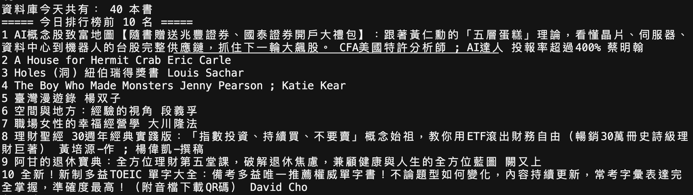

Web scraping
- Python
- MariaDB
- BS4
- Requests
- SQL
Projects, experiments, and things I’m learning.
In development
A practice tool for arranging Clash Royale scenarios and revisiting saved positions. I'm refining the setup, playback controls, and feedback as development continues.
View the case studyScreenshots showing how this website has developed.
The first version used a silver palette, a circular M, and the “People first.” introduction.
View repository